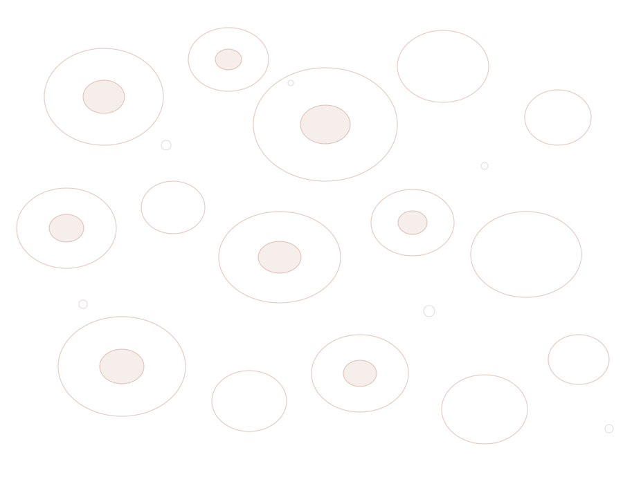
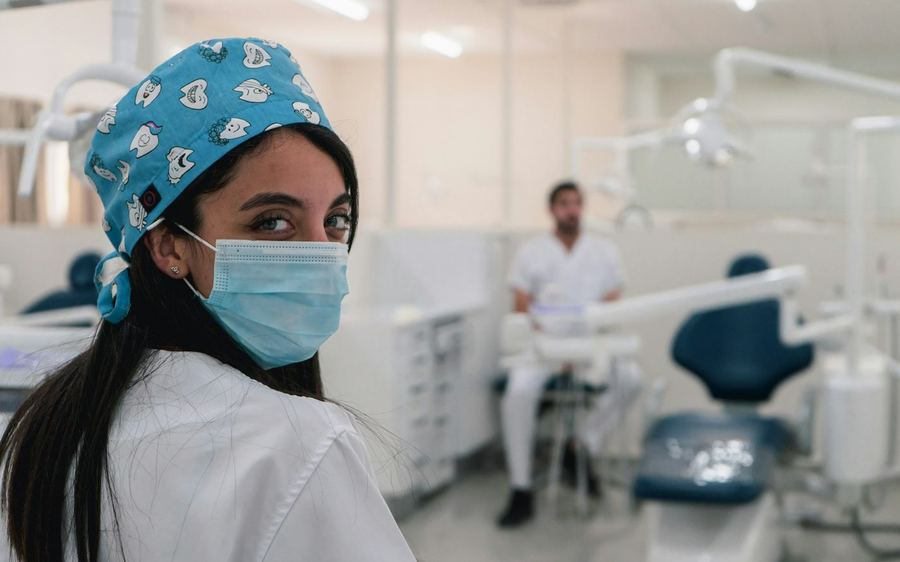
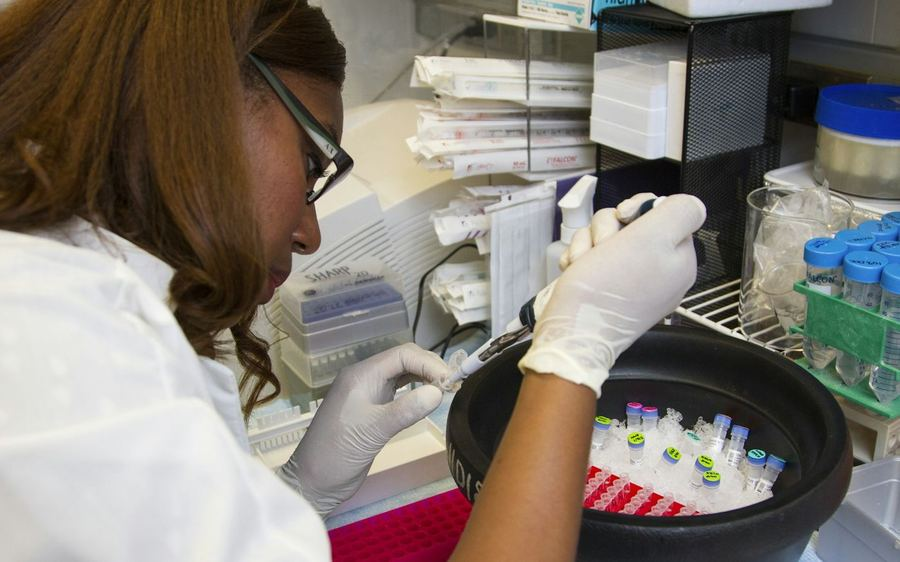

Four clinic builds. Each one is a working website — a real front door for a real practice, shaped around how its patients search, decide and book. Click through and use them.
Online booking, a service page for every treatment, and a Google Business Profile built from scratch for a two-chair practice in Ikeja. The site answers the questions the front desk used to answer by phone.

DentalService pages for a neighbourhood practice, a WhatsApp enquiry path that reaches the front desk with the details already filled in, and practical information for the families who walk in.
A clear test directory, a home-sample request flow, and result-collection information — the three things patients phone a lab to ask, answered before they pick up the phone.

DiagnosticsA specialist-care build: careful language, private enquiry routing, and clear patient information throughout. The kind of site that makes a difficult conversation easier to start.
These four sites do not share a template, and that is the point. A two-chair dental studio in Ikeja and a fertility clinic in Lekki do not need the same website — different patients, different questions, different tone.
They are also a range card. Whatever your practice looks like, one of these shows the kind of thing we would build for you.
Start a project →The four builds above show how we work with a brief. These twelve show the range — each one a complete clinic website built on its own design system, its own typography and its own palette. Nothing here is a template with the colours swapped.
Browse the design range →